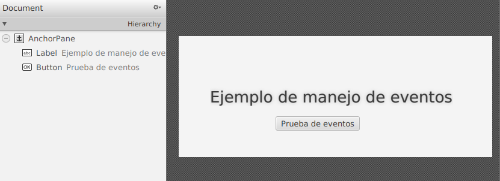

Utilizando MVC y Scene Builder.
La estructura de nuestro proyecto contendrá los siguientes ficheros:
- Ejer06ManejoEntradaUsuario. Principal, hereda de Application.
- FXML_ManejoEventos. Nuestro FXML, la vista.
- FXML_ManejoEventosController. Nuestro controlador.
En nuestro programa principal especificaremos nuestra Escenario (Stage) y nuestra escena (Scene), así como los eventos asociados al escenario, esto no podemos hacerlo desde Scene Builder.
public class Ejer06ManejoEntradaUsuario extends Application {
public void start(Stage stage) throws Exception {
Parent root = FXMLLoader.load(getClass().getResource("FXML_ManejoEventos.fxml"));
// Manejo de eventos emitidos por el escenario (Stage)
stage.setOnShowing(event -> messageAndWait5Seconds("Se va a mostrar la ventana (en 5 segundos)"));
stage.setOnShown(event -> System.out.println("Ventana mostrada"));
stage.setOnCloseRequest(event -> System.out.println("Recibida petición de cierre de ventana"));
stage.setOnHiding(event -> messageAndWait5Seconds("Se va a cerrar la ventana (en 5 segundos)"));
stage.setOnHidden(event -> System.out.println("Ventana cerrada"));
Scene scene = new Scene(root);
stage.setScene(scene);
stage.show();
}
public static void main(String[] args) {
launch(args);
}
public void messageAndWait5Seconds(String msg) {
System.out.println(msg);
try {
TimeUnit.SECONDS.sleep(5);
} catch (InterruptedException e) {
e.printStackTrace();
}
}
}
Nuestra vista en Scene Builder contendrá una etiqueta (Label) y un botón (Button):

Indicaremos en la pestaña controller que fichero hará de controlador, en nuestro caso: FXML_ManejoEventosController
En el fichero controlador escribimos nuestros métodos:
public class FXML_ManejoEventosController implements Initializable {
@Override
public void initialize(URL url, ResourceBundle rb) {
// TODO
}
@FXML
public void keyPressed(KeyEvent keyEvent) {
// Insertar aquí el código a ejecutar cuando se pulse el ratón
System.out.println("--->"+keyEvent.getText());
switch (keyEvent.getCode().getName()) {
case "Esc" -> {
System.out.println("Tecla reconocida");
System.out.println(keyEvent.getCode().getName());
}
case "Enter" -> {
System.out.println("Tecla reconocida");
System.out.println(keyEvent.getCode().getName());
}
default -> {
System.out.println("Tecla no reconocida");
System.out.println(keyEvent.getCode().getName());
}
}
}
@FXML
public void ratonClicked(MouseEvent mouseEvent) {
// Insertar aquí el código a ejecutar cuando se haga clic en el ratón
System.out.println("Ratón clicado en (x, y): ("
+ mouseEvent.getX() + ", " + mouseEvent.getY() + ")");
// También se puede comprobar sobre qué botón se ha actuado,
// válido para cualquier acción (pressed, released, clicked, etc)
if (mouseEvent.getButton() == MouseButton.PRIMARY) {
System.out.println("Botón principal");
} else if (mouseEvent.getButton() == MouseButton.SECONDARY) {
System.out.println("Botón secundario");
}
}
@FXML
public void ratonReleased(MouseEvent mouseEvent){
// Insertar aquí el código a ejecutar cuando se suelte el ratón
System.out.println("Ratón soltado en (x, y): ("
+ mouseEvent.getX() + ", " + mouseEvent.getY() + ")");
}
}
IMPORTANTE: Los métodos que asociaremos en la vista deben tener la anotación @FXML. Esa anotación indica que el elemento que aparece a continuación de él está asociado a algún elemento del archivo FXML.
Asociaremos al botón los eventos de pulsar una tecla, hacer click con el ratón y soltar el botón del ratón.
Para ello, en la sección code del botón, buscamos los eventos que nos interesan y seleccionamos el método.
- On Key Pressed
- On Mouse Clicked
- On Mouse Released

Y el resultado, al pulsar con el ratón sobre el botón.